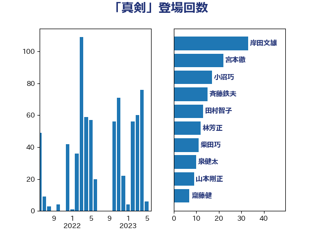

単語「真剣」

| 岸田文雄 | 自由民主党 | 33 回 |
| 宮本徹 | 日本共産党 | 22 回 |
| 小沼巧 | 立憲民主党 | 17 回 |
| 斉藤鉄夫 | 公明党 | 15 回 |
| 田村智子 | 日本共産党 | 13 回 |
| 林芳正 | 自由民主党 | 12 回 |
| 柴田巧 | 日本維新の会 | 11 回 |
| 泉健太 | 立憲民主党 | 10 回 |
| 山本剛正 | 日本維新の会 | 9 回 |
| 齋藤健 | 自由民主党 | 7 回 |
| 阿部知子 | 立憲民主党 | 7 回 |
| 沢田良 | 日本維新の会 | 7 回 |
| 山下芳生 | 日本共産党 | 7 回 |
| 近藤和也 | 立憲民主党 | 6 回 |
| 足立康史 | 日本維新の会 | 6 回 |
| 源馬謙太郎 | 立憲民主党 | 6 回 |
| 吉田はるみ | 立憲民主党 | 6 回 |
| 馬場雄基 | 立憲民主党 | 5 回 |
| 音喜多駿 | 日本維新の会 | 5 回 |
| 長妻昭 | 立憲民主党 | 5 回 |
| 野田聖子 | 自由民主党 | 5 回 |
| 西村康稔 | 自由民主党 | 5 回 |
| 田村貴昭 | 日本共産党 | 5 回 |
| 河野太郎 | 自由民主党 | 5 回 |
| 本村伸子 | 日本共産党 | 5 回 |
| 末松義規 | 立憲民主党 | 5 回 |
| 岩渕友 | 日本共産党 | 5 回 |
| 小野泰輔 | 日本維新の会 | 5 回 |
| 小西洋之 | 立憲民主党 | 5 回 |
| 大塚耕平 | 国民民主党 | 5 回 |
| 伴野豊 | 立憲民主党 | 5 回 |
| 中島克仁 | 立憲民主党 | 5 回 |
| 上月良祐 | 自由民主党 | 5 回 |
| 高良鉄美 | 無所属 | 4 回 |
| 馬場伸幸 | 日本維新の会 | 4 回 |
| 葉梨康弘 | 自由民主党 | 4 回 |
| 篠原孝 | 立憲民主党 | 4 回 |
| 石井苗子 | 日本維新の会 | 4 回 |
| 玄葉光一郎 | 立憲民主党 | 4 回 |
| 浅川義治 | 日本維新の会 | 4 回 |
| 梅谷守 | 立憲民主党 | 4 回 |
| 末松信介 | 自由民主党 | 4 回 |
| 川田龍平 | 立憲民主党 | 4 回 |
| 山岡達丸 | 立憲民主党 | 4 回 |
| 小泉進次郎 | 自由民主党 | 4 回 |
| 小池晃 | 日本共産党 | 4 回 |
| 奥野総一郎 | 立憲民主党 | 4 回 |
| 北神圭朗 | 無所属 | 4 回 |
| 井坂信彦 | 立憲民主党 | 4 回 |
| 高木啓 | 自由民主党 | 3 回 |
| 鈴木俊一 | 自由民主党 | 3 回 |
| 野田佳彦 | 立憲民主党 | 3 回 |
| 足立敏之 | 自由民主党 | 3 回 |
| 谷田川元 | 立憲民主党 | 3 回 |
| 藤田文武 | 日本維新の会 | 3 回 |
| 若松謙維 | 公明党 | 3 回 |
| 福島伸享 | 無所属 | 3 回 |
| 田名部匡代 | 立憲民主党 | 3 回 |
| 田中健 | 国民民主党 | 3 回 |
| 森本真治 | 立憲民主党 | 3 回 |
| 徳永久志 | 立憲民主党 | 3 回 |
| 小林鷹之 | 自由民主党 | 3 回 |
| 小倉將信 | 自由民主党 | 3 回 |
| 吉田とも代 | 日本維新の会 | 3 回 |
| 佐藤正久 | 自由民主党 | 3 回 |
| 佐々木さやか | 公明党 | 3 回 |
| 伊波洋一 | 無所属 | 3 回 |
| 井上哲士 | 日本共産党 | 3 回 |
| 亀岡偉民 | 自由民主党 | 3 回 |
| 三木圭恵 | 日本維新の会 | 3 回 |
| 高橋光男 | 公明党 | 2 回 |
| 高木陽介 | 公明党 | 2 回 |
| 階猛 | 立憲民主党 | 2 回 |
| 阿部弘樹 | 日本維新の会 | 2 回 |
| 鈴木貴子 | 自由民主党 | 2 回 |
| 野田国義 | 立憲民主党 | 2 回 |
| 酒井庸行 | 自由民主党 | 2 回 |
| 衛藤晟一 | 自由民主党 | 2 回 |
| 藤木眞也 | 自由民主党 | 2 回 |
| 芳賀道也 | 国民民主党 | 2 回 |
| 舞立昇治 | 自由民主党 | 2 回 |
| 緒方林太郎 | 無所属 | 2 回 |
| 笠井亮 | 日本共産党 | 2 回 |
| 福田昭夫 | 立憲民主党 | 2 回 |
| 福山哲郎 | 立憲民主党 | 2 回 |
| 田所嘉徳 | 自由民主党 | 2 回 |
| 田島麻衣子 | 立憲民主党 | 2 回 |
| 猪瀬直樹 | 日本維新の会 | 2 回 |
| 渡辺創 | 立憲民主党 | 2 回 |
| 浜田靖一 | 自由民主党 | 2 回 |
| 榛葉賀津也 | 国民民主党 | 2 回 |
| 森屋隆 | 立憲民主党 | 2 回 |
| 森屋宏 | 自由民主党 | 2 回 |
| 柴愼一 | 立憲民主党 | 2 回 |
| 松沢成文 | 日本維新の会 | 2 回 |
| 松川るい | 自由民主党 | 2 回 |
| 松原仁 | 立憲民主党 | 2 回 |
| 東徹 | 日本維新の会 | 2 回 |
| 早稲田ゆき | 立憲民主党 | 2 回 |
| 日下正喜 | 公明党 | 2 回 |
| 志位和夫 | 日本共産党 | 2 回 |
| 平木大作 | 公明党 | 2 回 |
| 山田勝彦 | 立憲民主党 | 2 回 |
| 山添拓 | 日本共産党 | 2 回 |
| 小沢雅仁 | 立憲民主党 | 2 回 |
| 寺田学 | 立憲民主党 | 2 回 |
| 宮本岳志 | 日本共産党 | 2 回 |
| 宮口治子 | 立憲民主党 | 2 回 |
| 大島敦 | 立憲民主党 | 2 回 |
| 大口善徳 | 公明党 | 2 回 |
| 堀場幸子 | 日本維新の会 | 2 回 |
| 堀井学 | 自由民主党 | 2 回 |
| 國重徹 | 公明党 | 2 回 |
| 國場幸之助 | 自由民主党 | 2 回 |
| 吉田久美子 | 公明党 | 2 回 |
| 古川元久 | 国民民主党 | 2 回 |
| 加藤竜祥 | 自由民主党 | 2 回 |
| 加藤勝信 | 自由民主党 | 2 回 |
| 伊藤俊輔 | 立憲民主党 | 2 回 |
| 仁比聡平 | 日本共産党 | 2 回 |
| 中川正春 | 立憲民主党 | 2 回 |
| 世耕弘成 | 自由民主党 | 2 回 |
| 鬼木誠 | 立憲民主党 | 1 回 |
| 高橋千鶴子 | 日本共産党 | 1 回 |
| 高木かおり | 日本維新の会 | 1 回 |
| 須藤元気 | 無所属 | 1 回 |
| 青山大人 | 立憲民主党 | 1 回 |
| 関芳弘 | 自由民主党 | 1 回 |
| 長島昭久 | 自由民主党 | 1 回 |
| 鈴木敦 | 国民民主党 | 1 回 |
| 金子道仁 | 日本維新の会 | 1 回 |
| 金子恵美 | 立憲民主党 | 1 回 |
| 道下大樹 | 立憲民主党 | 1 回 |
| 辻清人 | 自由民主党 | 1 回 |
| 谷合正明 | 公明党 | 1 回 |
| 西野太亮 | 自由民主党 | 1 回 |
| 菊田真紀子 | 立憲民主党 | 1 回 |
| 荒井優 | 立憲民主党 | 1 回 |
| 茂木敏充 | 自由民主党 | 1 回 |
| 舟山康江 | 国民民主党 | 1 回 |
| 羽田次郎 | 立憲民主党 | 1 回 |
| 美延映夫 | 日本維新の会 | 1 回 |
| 緑川貴士 | 立憲民主党 | 1 回 |
| 紙智子 | 日本共産党 | 1 回 |
| 篠原豪 | 立憲民主党 | 1 回 |
| 笹川博義 | 自由民主党 | 1 回 |
| 笠浩史 | 無所属 | 1 回 |
| 福島みずほ | 社会民主党 | 1 回 |
| 神谷裕 | 立憲民主党 | 1 回 |
| 神田潤一 | 自由民主党 | 1 回 |
| 礒崎哲史 | 国民民主党 | 1 回 |
| 石破茂 | 自由民主党 | 1 回 |
| 石橋通宏 | 立憲民主党 | 1 回 |
| 石川大我 | 立憲民主党 | 1 回 |
| 石井章 | 日本維新の会 | 1 回 |
| 石井啓一 | 公明党 | 1 回 |
| 田嶋要 | 立憲民主党 | 1 回 |
| 甘利明 | 自由民主党 | 1 回 |
| 玉木雄一郎 | 国民民主党 | 1 回 |
| 片山大介 | 日本維新の会 | 1 回 |
| 熊田裕通 | 自由民主党 | 1 回 |
| 漆間譲司 | 日本維新の会 | 1 回 |
| 湯原俊二 | 立憲民主党 | 1 回 |
| 渡辺孝一 | 自由民主党 | 1 回 |
| 浜野喜史 | 国民民主党 | 1 回 |
| 浜田聡 | NHK党 | 1 回 |
| 浜地雅一 | 公明党 | 1 回 |
| 河野義博 | 公明党 | 1 回 |
| 江田憲司 | 立憲民主党 | 1 回 |
| 比嘉奈津美 | 自由民主党 | 1 回 |
| 武井俊輔 | 自由民主党 | 1 回 |
| 櫻井充 | 自由民主党 | 1 回 |
| 櫛渕万里 | れいわ新選組 | 1 回 |
| 森まさこ | 自由民主党 | 1 回 |
| 梅村聡 | 日本維新の会 | 1 回 |
| 梅村みずほ | 日本維新の会 | 1 回 |
| 柘植芳文 | 自由民主党 | 1 回 |
| 枝野幸男 | 立憲民主党 | 1 回 |
| 松野博一 | 自由民主党 | 1 回 |
| 杉久武 | 公明党 | 1 回 |
| 早坂敦 | 日本維新の会 | 1 回 |
| 新藤義孝 | 自由民主党 | 1 回 |
| 新垣邦男 | 立憲民主党 | 1 回 |
| 斎藤アレックス | 国民民主党 | 1 回 |
| 後藤茂之 | 自由民主党 | 1 回 |
| 市村浩一郎 | 日本維新の会 | 1 回 |
| 川合孝典 | 国民民主党 | 1 回 |
| 岬麻紀 | 日本維新の会 | 1 回 |
| 岩谷良平 | 日本維新の会 | 1 回 |
| 岡田直樹 | 自由民主党 | 1 回 |
| 岡田克也 | 立憲民主党 | 1 回 |
| 岡本あき子 | 立憲民主党 | 1 回 |
| 山田俊男 | 自由民主党 | 1 回 |
| 山崎誠 | 立憲民主党 | 1 回 |
| 山崎正恭 | 公明党 | 1 回 |
| 山口壯 | 自由民主党 | 1 回 |
| 寺田静 | 無所属 | 1 回 |
| 安江伸夫 | 公明党 | 1 回 |
| 太栄志 | 立憲民主党 | 1 回 |
| 大西健介 | 立憲民主党 | 1 回 |
| 大石あきこ | れいわ新選組 | 1 回 |
| 大島九州男 | れいわ新選組 | 1 回 |
| 塩村あやか | 立憲民主党 | 1 回 |
| 坂本祐之輔 | 立憲民主党 | 1 回 |
| 土田慎 | 自由民主党 | 1 回 |
| 嘉田由紀子 | 無所属 | 1 回 |
| 和田有一朗 | 日本維新の会 | 1 回 |
| 吉良よし子 | 日本共産党 | 1 回 |
| 吉田豊史 | 無所属 | 1 回 |
| 吉川沙織 | 立憲民主党 | 1 回 |
| 吉川ゆうみ | 自由民主党 | 1 回 |
| 古川禎久 | 自由民主党 | 1 回 |
| 古屋範子 | 公明党 | 1 回 |
| 勝部賢志 | 立憲民主党 | 1 回 |
| 住吉寛紀 | 日本維新の会 | 1 回 |
| 伊藤孝恵 | 国民民主党 | 1 回 |
| 今枝宗一郎 | 自由民主党 | 1 回 |
| 仁木博文 | 無所属 | 1 回 |
| 中条きよし | 日本維新の会 | 1 回 |
| 中曽根康隆 | 自由民主党 | 1 回 |
| 中司宏 | 日本維新の会 | 1 回 |
| 下条みつ | 立憲民主党 | 1 回 |
| 上田清司 | 国民民主党 | 1 回 |
| 三浦信祐 | 公明党 | 1 回 |
| 一谷勇一郎 | 日本維新の会 | 1 回 |